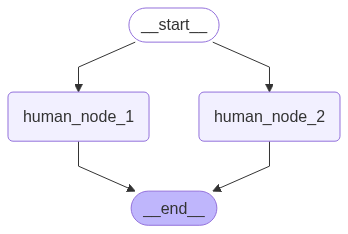
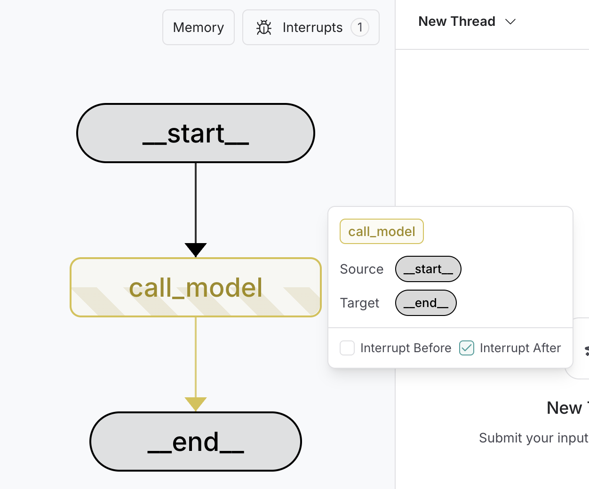

Enable human intervention¶
To review, edit, and approve tool calls in an agent or workflow, use interrupts to pause a graph and wait for human input. Interrupts use LangGraph's persistence layer, which saves the graph state, to indefinitely pause graph execution until you resume.
Info
For more information about human-in-the-loop workflows, see the Human-in-the-Loop conceptual guide.
Pause using interrupt¶
:::python
Dynamic interrupts (also known as dynamic breakpoints) are triggered based on the current state of the graph. You can set dynamic interrupts by calling @[interrupt function][interrupt] in the appropriate place. The graph will pause, which allows for human intervention, and then resumes the graph with their input. It's useful for tasks like approvals, edits, or gathering additional context.
Note
As of v1.0, interrupt is the recommended way to pause a graph. NodeInterrupt is deprecated and will be removed in v2.0.
:::
:::js
Dynamic interrupts (also known as dynamic breakpoints) are triggered based on the current state of the graph. You can set dynamic interrupts by calling @[interrupt function][interrupt] in the appropriate place. The graph will pause, which allows for human intervention, and then resumes the graph with their input. It's useful for tasks like approvals, edits, or gathering additional context.
:::
To use interrupt in your graph, you need to:
- Specify a checkpointer to save the graph state after each step.
- Call
interrupt()in the appropriate place. See the Common Patterns section for examples. - Run the graph with a thread ID until the
interruptis hit. - Resume execution using
invoke/stream(see TheCommandprimitive).
:::python
# highlight-next-line
from langgraph.types import interrupt, Command
def human_node(state: State):
# highlight-next-line
value = interrupt( # (1)!
{
"text_to_revise": state["some_text"] # (2)!
}
)
return {
"some_text": value # (3)!
}
graph = graph_builder.compile(checkpointer=checkpointer) # (4)!
# Run the graph until the interrupt is hit.
config = {"configurable": {"thread_id": "some_id"}}
result = graph.invoke({"some_text": "original text"}, config=config) # (5)!
print(result['__interrupt__']) # (6)!
# > [
# > Interrupt(
# > value={'text_to_revise': 'original text'},
# > resumable=True,
# > ns=['human_node:6ce9e64f-edef-fe5d-f7dc-511fa9526960']
# > )
# > ]
# highlight-next-line
print(graph.invoke(Command(resume="Edited text"), config=config)) # (7)!
# > {'some_text': 'Edited text'}
interrupt(...)pauses execution athuman_node, surfacing the given payload to a human.- Any JSON serializable value can be passed to the
interruptfunction. Here, a dict containing the text to revise. - Once resumed, the return value of
interrupt(...)is the human-provided input, which is used to update the state. - A checkpointer is required to persist graph state. In production, this should be durable (e.g., backed by a database).
- The graph is invoked with some initial state.
- When the graph hits the interrupt, it returns an
Interruptobject with the payload and metadata. - The graph is resumed with a
Command(resume=...), injecting the human's input and continuing execution. :::
:::js
// highlight-next-line
import { interrupt, Command } from "@langchain/langgraph";
const graph = graphBuilder
.addNode("humanNode", (state) => {
// highlight-next-line
const value = interrupt(
// (1)!
{
textToRevise: state.someText, // (2)!
}
);
return {
someText: value, // (3)!
};
})
.addEdge(START, "humanNode")
.compile({ checkpointer }); // (4)!
// Run the graph until the interrupt is hit.
const config = { configurable: { thread_id: "some_id" } };
const result = await graph.invoke({ someText: "original text" }, config); // (5)!
console.log(result.__interrupt__); // (6)!
// > [
// > {
// > value: { textToRevise: 'original text' },
// > resumable: true,
// > ns: ['humanNode:6ce9e64f-edef-fe5d-f7dc-511fa9526960'],
// > when: 'during'
// > }
// > ]
// highlight-next-line
console.log(await graph.invoke(new Command({ resume: "Edited text" }), config)); // (7)!
// > { someText: 'Edited text' }
interrupt(...)pauses execution athumanNode, surfacing the given payload to a human.- Any JSON serializable value can be passed to the
interruptfunction. Here, an object containing the text to revise. - Once resumed, the return value of
interrupt(...)is the human-provided input, which is used to update the state. - A checkpointer is required to persist graph state. In production, this should be durable (e.g., backed by a database).
- The graph is invoked with some initial state.
- When the graph hits the interrupt, it returns an object with
__interrupt__containing the payload and metadata. - The graph is resumed with a
Command({ resume: ... }), injecting the human's input and continuing execution. :::
Extended example: using interrupt
:::python
from typing import TypedDict
import uuid
from langgraph.checkpoint.memory import InMemorySaver
from langgraph.constants import START
from langgraph.graph import StateGraph
# highlight-next-line
from langgraph.types import interrupt, Command
class State(TypedDict):
some_text: str
def human_node(state: State):
# highlight-next-line
value = interrupt( # (1)!
{
"text_to_revise": state["some_text"] # (2)!
}
)
return {
"some_text": value # (3)!
}
# Build the graph
graph_builder = StateGraph(State)
graph_builder.add_node("human_node", human_node)
graph_builder.add_edge(START, "human_node")
checkpointer = InMemorySaver() # (4)!
graph = graph_builder.compile(checkpointer=checkpointer)
# Pass a thread ID to the graph to run it.
config = {"configurable": {"thread_id": uuid.uuid4()}}
# Run the graph until the interrupt is hit.
result = graph.invoke({"some_text": "original text"}, config=config) # (5)!
print(result['__interrupt__']) # (6)!
# > [
# > Interrupt(
# > value={'text_to_revise': 'original text'},
# > resumable=True,
# > ns=['human_node:6ce9e64f-edef-fe5d-f7dc-511fa9526960']
# > )
# > ]
print(result["__interrupt__"]) # (6)!
# > [Interrupt(value={'text_to_revise': 'original text'}, id='6d7c4048049254c83195429a3659661d')]
# highlight-next-line
print(graph.invoke(Command(resume="Edited text"), config=config)) # (7)!
# > {'some_text': 'Edited text'}
interrupt(...)pauses execution athuman_node, surfacing the given payload to a human.- Any JSON serializable value can be passed to the
interruptfunction. Here, a dict containing the text to revise. - Once resumed, the return value of
interrupt(...)is the human-provided input, which is used to update the state. - A checkpointer is required to persist graph state. In production, this should be durable (e.g., backed by a database).
- The graph is invoked with some initial state.
- When the graph hits the interrupt, it returns an
Interruptobject with the payload and metadata. - The graph is resumed with a
Command(resume=...), injecting the human's input and continuing execution. :::
:::js
import { z } from "zod";
import { v4 as uuidv4 } from "uuid";
import { MemorySaver, StateGraph, START, interrupt, Command } from "@langchain/langgraph";
const StateAnnotation = z.object({
someText: z.string(),
});
// Build the graph
const graphBuilder = new StateGraph(StateAnnotation)
.addNode("humanNode", (state) => {
// highlight-next-line
const value = interrupt( // (1)!
{
textToRevise: state.someText // (2)!
}
);
return {
someText: value // (3)!
};
})
.addEdge(START, "humanNode");
const checkpointer = new MemorySaver(); // (4)!
const graph = graphBuilder.compile({ checkpointer });
// Pass a thread ID to the graph to run it.
const config = { configurable: { thread_id: uuidv4() } };
// Run the graph until the interrupt is hit.
const result = await graph.invoke({ someText: "original text" }, config); // (5)!
console.log(result.__interrupt__); // (6)!
// > [
// > {
// > value: { textToRevise: 'original text' },
// > resumable: true,
// > ns: ['humanNode:6ce9e64f-edef-fe5d-f7dc-511fa9526960'],
// > when: 'during'
// > }
// > ]
// highlight-next-line
console.log(await graph.invoke(new Command({ resume: "Edited text" }), config)); // (7)!
// > { someText: 'Edited text' }
interrupt(...)pauses execution athumanNode, surfacing the given payload to a human.- Any JSON serializable value can be passed to the
interruptfunction. Here, an object containing the text to revise. - Once resumed, the return value of
interrupt(...)is the human-provided input, which is used to update the state. - A checkpointer is required to persist graph state. In production, this should be durable (e.g., backed by a database).
- The graph is invoked with some initial state.
- When the graph hits the interrupt, it returns an object with
__interrupt__containing the payload and metadata. - The graph is resumed with a
Command({ resume: ... }), injecting the human's input and continuing execution. :::
New in 0.4.0
:::python
__interrupt__ is a special key that will be returned when running the graph if the graph is interrupted. Support for __interrupt__ in invoke and ainvoke has been added in version 0.4.0. If you're on an older version, you will only see __interrupt__ in the result if you use stream or astream. You can also use graph.get_state(thread_id) to get the interrupt value(s).
:::
:::js
__interrupt__ is a special key that will be returned when running the graph if the graph is interrupted. Support for __interrupt__ in invoke has been added in version 0.4.0. If you're on an older version, you will only see __interrupt__ in the result if you use stream. You can also use graph.getState(config) to get the interrupt value(s).
:::
Warning
:::python Interrupts resemble Python's input() function in terms of developer experience, but they do not automatically resume execution from the interruption point. Instead, they rerun the entire node where the interrupt was used. For this reason, interrupts are typically best placed at the start of a node or in a dedicated node. :::
:::js Interrupts are both powerful and ergonomic, but it's important to note that they do not automatically resume execution from the interrupt point. Instead, they rerun the entire where the interrupt was used. For this reason, interrupts are typically best placed at the state of a node or in a dedicated node. :::
Resume using the Command primitive¶
:::python
Warning
Resuming from an interrupt is different from Python's input() function, where execution resumes from the exact point where the input() function was called.
:::
When the interrupt function is used within a graph, execution pauses at that point and awaits user input.
:::python
To resume execution, use the @[Command][Command] primitive, which can be supplied via the invoke or stream methods. The graph resumes execution from the beginning of the node where interrupt(...) was initially called. This time, the interrupt function will return the value provided in Command(resume=value) rather than pausing again. All code from the beginning of the node to the interrupt will be re-executed.
# Resume graph execution by providing the user's input.
graph.invoke(Command(resume={"age": "25"}), thread_config)
:::
:::js
To resume execution, use the @[Command][Command] primitive, which can be supplied via the invoke or stream methods. The graph resumes execution from the beginning of the node where interrupt(...) was initially called. This time, the interrupt function will return the value provided in Command(resume=value) rather than pausing again. All code from the beginning of the node to the interrupt will be re-executed.
// Resume graph execution by providing the user's input.
await graph.invoke(new Command({ resume: { age: "25" } }), threadConfig);
:::
Resume multiple interrupts with one invocation¶
When nodes with interrupt conditions are run in parallel, it's possible to have multiple interrupts in the task queue. For example, the following graph has two nodes run in parallel that require human input:

:::python
Once your graph has been interrupted and is stalled, you can resume all the interrupts at once with Command.resume, passing a dictionary mapping of interrupt ids to resume values.
from typing import TypedDict
import uuid
from langchain_core.runnables import RunnableConfig
from langgraph.checkpoint.memory import InMemorySaver
from langgraph.constants import START
from langgraph.graph import StateGraph
from langgraph.types import interrupt, Command
class State(TypedDict):
text_1: str
text_2: str
def human_node_1(state: State):
value = interrupt({"text_to_revise": state["text_1"]})
return {"text_1": value}
def human_node_2(state: State):
value = interrupt({"text_to_revise": state["text_2"]})
return {"text_2": value}
graph_builder = StateGraph(State)
graph_builder.add_node("human_node_1", human_node_1)
graph_builder.add_node("human_node_2", human_node_2)
# Add both nodes in parallel from START
graph_builder.add_edge(START, "human_node_1")
graph_builder.add_edge(START, "human_node_2")
checkpointer = InMemorySaver()
graph = graph_builder.compile(checkpointer=checkpointer)
thread_id = str(uuid.uuid4())
config: RunnableConfig = {"configurable": {"thread_id": thread_id}}
result = graph.invoke(
{"text_1": "original text 1", "text_2": "original text 2"}, config=config
)
# Resume with mapping of interrupt IDs to values
resume_map = {
i.id: f"edited text for {i.value['text_to_revise']}"
for i in graph.get_state(config).interrupts
}
print(graph.invoke(Command(resume=resume_map), config=config))
# > {'text_1': 'edited text for original text 1', 'text_2': 'edited text for original text 2'}
:::
:::js
const state = await parentGraph.getState(threadConfig);
const resumeMap = Object.fromEntries(
state.interrupts.map((i) => [
i.interruptId,
`human input for prompt ${i.value}`,
])
);
await parentGraph.invoke(new Command({ resume: resumeMap }), threadConfig);
:::
Common patterns¶
Below we show different design patterns that can be implemented using interrupt and Command.
Approve or reject¶

Pause the graph before a critical step, such as an API call, to review and approve the action. If the action is rejected, you can prevent the graph from executing the step, and potentially take an alternative action.
:::python
from typing import Literal
from langgraph.types import interrupt, Command
def human_approval(state: State) -> Command[Literal["some_node", "another_node"]]:
is_approved = interrupt(
{
"question": "Is this correct?",
# Surface the output that should be
# reviewed and approved by the human.
"llm_output": state["llm_output"]
}
)
if is_approved:
return Command(goto="some_node")
else:
return Command(goto="another_node")
# Add the node to the graph in an appropriate location
# and connect it to the relevant nodes.
graph_builder.add_node("human_approval", human_approval)
graph = graph_builder.compile(checkpointer=checkpointer)
# After running the graph and hitting the interrupt, the graph will pause.
# Resume it with either an approval or rejection.
thread_config = {"configurable": {"thread_id": "some_id"}}
graph.invoke(Command(resume=True), config=thread_config)
:::
:::js
import { interrupt, Command } from "@langchain/langgraph";
// Add the node to the graph in an appropriate location
// and connect it to the relevant nodes.
graphBuilder.addNode("humanApproval", (state) => {
const isApproved = interrupt({
question: "Is this correct?",
// Surface the output that should be
// reviewed and approved by the human.
llmOutput: state.llmOutput,
});
if (isApproved) {
return new Command({ goto: "someNode" });
} else {
return new Command({ goto: "anotherNode" });
}
});
const graph = graphBuilder.compile({ checkpointer });
// After running the graph and hitting the interrupt, the graph will pause.
// Resume it with either an approval or rejection.
const threadConfig = { configurable: { thread_id: "some_id" } };
await graph.invoke(new Command({ resume: true }), threadConfig);
:::
Extended example: approve or reject with interrupt
:::python
from typing import Literal, TypedDict
import uuid
from langgraph.constants import START, END
from langgraph.graph import StateGraph
from langgraph.types import interrupt, Command
from langgraph.checkpoint.memory import InMemorySaver
# Define the shared graph state
class State(TypedDict):
llm_output: str
decision: str
# Simulate an LLM output node
def generate_llm_output(state: State) -> State:
return {"llm_output": "This is the generated output."}
# Human approval node
def human_approval(state: State) -> Command[Literal["approved_path", "rejected_path"]]:
decision = interrupt({
"question": "Do you approve the following output?",
"llm_output": state["llm_output"]
})
if decision == "approve":
return Command(goto="approved_path", update={"decision": "approved"})
else:
return Command(goto="rejected_path", update={"decision": "rejected"})
# Next steps after approval
def approved_node(state: State) -> State:
print("✅ Approved path taken.")
return state
# Alternative path after rejection
def rejected_node(state: State) -> State:
print("❌ Rejected path taken.")
return state
# Build the graph
builder = StateGraph(State)
builder.add_node("generate_llm_output", generate_llm_output)
builder.add_node("human_approval", human_approval)
builder.add_node("approved_path", approved_node)
builder.add_node("rejected_path", rejected_node)
builder.set_entry_point("generate_llm_output")
builder.add_edge("generate_llm_output", "human_approval")
builder.add_edge("approved_path", END)
builder.add_edge("rejected_path", END)
checkpointer = InMemorySaver()
graph = builder.compile(checkpointer=checkpointer)
# Run until interrupt
config = {"configurable": {"thread_id": uuid.uuid4()}}
result = graph.invoke({}, config=config)
print(result["__interrupt__"])
# Output:
# Interrupt(value={'question': 'Do you approve the following output?', 'llm_output': 'This is the generated output.'}, ...)
# Simulate resuming with human input
# To test rejection, replace resume="approve" with resume="reject"
final_result = graph.invoke(Command(resume="approve"), config=config)
print(final_result)
:::js
import { z } from "zod";
import { v4 as uuidv4 } from "uuid";
import {
StateGraph,
START,
END,
interrupt,
Command,
MemorySaver
} from "@langchain/langgraph";
// Define the shared graph state
const StateAnnotation = z.object({
llmOutput: z.string(),
decision: z.string(),
});
// Simulate an LLM output node
function generateLlmOutput(state: z.infer<typeof StateAnnotation>) {
return { llmOutput: "This is the generated output." };
}
// Human approval node
function humanApproval(state: z.infer<typeof StateAnnotation>): Command {
const decision = interrupt({
question: "Do you approve the following output?",
llmOutput: state.llmOutput
});
if (decision === "approve") {
return new Command({
goto: "approvedPath",
update: { decision: "approved" }
});
} else {
return new Command({
goto: "rejectedPath",
update: { decision: "rejected" }
});
}
}
// Next steps after approval
function approvedNode(state: z.infer<typeof StateAnnotation>) {
console.log("✅ Approved path taken.");
return state;
}
// Alternative path after rejection
function rejectedNode(state: z.infer<typeof StateAnnotation>) {
console.log("❌ Rejected path taken.");
return state;
}
// Build the graph
const builder = new StateGraph(StateAnnotation)
.addNode("generateLlmOutput", generateLlmOutput)
.addNode("humanApproval", humanApproval, {
ends: ["approvedPath", "rejectedPath"]
})
.addNode("approvedPath", approvedNode)
.addNode("rejectedPath", rejectedNode)
.addEdge(START, "generateLlmOutput")
.addEdge("generateLlmOutput", "humanApproval")
.addEdge("approvedPath", END)
.addEdge("rejectedPath", END);
const checkpointer = new MemorySaver();
const graph = builder.compile({ checkpointer });
// Run until interrupt
const config = { configurable: { thread_id: uuidv4() } };
const result = await graph.invoke({}, config);
console.log(result.__interrupt__);
// Output:
// [{
// value: {
// question: 'Do you approve the following output?',
// llmOutput: 'This is the generated output.'
// },
// ...
// }]
// Simulate resuming with human input
// To test rejection, replace resume: "approve" with resume: "reject"
const finalResult = await graph.invoke(
new Command({ resume: "approve" }),
config
);
console.log(finalResult);
Review and edit state¶

:::python
from langgraph.types import interrupt
def human_editing(state: State):
...
result = interrupt(
# Interrupt information to surface to the client.
# Can be any JSON serializable value.
{
"task": "Review the output from the LLM and make any necessary edits.",
"llm_generated_summary": state["llm_generated_summary"]
}
)
# Update the state with the edited text
return {
"llm_generated_summary": result["edited_text"]
}
# Add the node to the graph in an appropriate location
# and connect it to the relevant nodes.
graph_builder.add_node("human_editing", human_editing)
graph = graph_builder.compile(checkpointer=checkpointer)
...
# After running the graph and hitting the interrupt, the graph will pause.
# Resume it with the edited text.
thread_config = {"configurable": {"thread_id": "some_id"}}
graph.invoke(
Command(resume={"edited_text": "The edited text"}),
config=thread_config
)
:::
:::js
import { interrupt } from "@langchain/langgraph";
function humanEditing(state: z.infer<typeof StateAnnotation>) {
const result = interrupt({
// Interrupt information to surface to the client.
// Can be any JSON serializable value.
task: "Review the output from the LLM and make any necessary edits.",
llmGeneratedSummary: state.llmGeneratedSummary,
});
// Update the state with the edited text
return {
llmGeneratedSummary: result.editedText,
};
}
// Add the node to the graph in an appropriate location
// and connect it to the relevant nodes.
graphBuilder.addNode("humanEditing", humanEditing);
const graph = graphBuilder.compile({ checkpointer });
// After running the graph and hitting the interrupt, the graph will pause.
// Resume it with the edited text.
const threadConfig = { configurable: { thread_id: "some_id" } };
await graph.invoke(
new Command({ resume: { editedText: "The edited text" } }),
threadConfig
);
:::
Extended example: edit state with interrupt
:::python
from typing import TypedDict
import uuid
from langgraph.constants import START, END
from langgraph.graph import StateGraph
from langgraph.types import interrupt, Command
from langgraph.checkpoint.memory import InMemorySaver
# Define the graph state
class State(TypedDict):
summary: str
# Simulate an LLM summary generation
def generate_summary(state: State) -> State:
return {
"summary": "The cat sat on the mat and looked at the stars."
}
# Human editing node
def human_review_edit(state: State) -> State:
result = interrupt({
"task": "Please review and edit the generated summary if necessary.",
"generated_summary": state["summary"]
})
return {
"summary": result["edited_summary"]
}
# Simulate downstream use of the edited summary
def downstream_use(state: State) -> State:
print(f"✅ Using edited summary: {state['summary']}")
return state
# Build the graph
builder = StateGraph(State)
builder.add_node("generate_summary", generate_summary)
builder.add_node("human_review_edit", human_review_edit)
builder.add_node("downstream_use", downstream_use)
builder.set_entry_point("generate_summary")
builder.add_edge("generate_summary", "human_review_edit")
builder.add_edge("human_review_edit", "downstream_use")
builder.add_edge("downstream_use", END)
# Set up in-memory checkpointing for interrupt support
checkpointer = InMemorySaver()
graph = builder.compile(checkpointer=checkpointer)
# Invoke the graph until it hits the interrupt
config = {"configurable": {"thread_id": uuid.uuid4()}}
result = graph.invoke({}, config=config)
# Output interrupt payload
print(result["__interrupt__"])
# Example output:
# > [
# > Interrupt(
# > value={
# > 'task': 'Please review and edit the generated summary if necessary.',
# > 'generated_summary': 'The cat sat on the mat and looked at the stars.'
# > },
# > id='...'
# > )
# > ]
# Resume the graph with human-edited input
edited_summary = "The cat lay on the rug, gazing peacefully at the night sky."
resumed_result = graph.invoke(
Command(resume={"edited_summary": edited_summary}),
config=config
)
print(resumed_result)
:::js
import { z } from "zod";
import { v4 as uuidv4 } from "uuid";
import {
StateGraph,
START,
END,
interrupt,
Command,
MemorySaver
} from "@langchain/langgraph";
// Define the graph state
const StateAnnotation = z.object({
summary: z.string(),
});
// Simulate an LLM summary generation
function generateSummary(state: z.infer<typeof StateAnnotation>) {
return {
summary: "The cat sat on the mat and looked at the stars."
};
}
// Human editing node
function humanReviewEdit(state: z.infer<typeof StateAnnotation>) {
const result = interrupt({
task: "Please review and edit the generated summary if necessary.",
generatedSummary: state.summary
});
return {
summary: result.editedSummary
};
}
// Simulate downstream use of the edited summary
function downstreamUse(state: z.infer<typeof StateAnnotation>) {
console.log(`✅ Using edited summary: ${state.summary}`);
return state;
}
// Build the graph
const builder = new StateGraph(StateAnnotation)
.addNode("generateSummary", generateSummary)
.addNode("humanReviewEdit", humanReviewEdit)
.addNode("downstreamUse", downstreamUse)
.addEdge(START, "generateSummary")
.addEdge("generateSummary", "humanReviewEdit")
.addEdge("humanReviewEdit", "downstreamUse")
.addEdge("downstreamUse", END);
// Set up in-memory checkpointing for interrupt support
const checkpointer = new MemorySaver();
const graph = builder.compile({ checkpointer });
// Invoke the graph until it hits the interrupt
const config = { configurable: { thread_id: uuidv4() } };
const result = await graph.invoke({}, config);
// Output interrupt payload
console.log(result.__interrupt__);
// Example output:
// [{
// value: {
// task: 'Please review and edit the generated summary if necessary.',
// generatedSummary: 'The cat sat on the mat and looked at the stars.'
// },
// resumable: true,
// ...
// }]
// Resume the graph with human-edited input
const editedSummary = "The cat lay on the rug, gazing peacefully at the night sky.";
const resumedResult = await graph.invoke(
new Command({ resume: { editedSummary } }),
config
);
console.log(resumedResult);
Review tool calls¶

To add a human approval step to a tool:
- Use
interrupt()in the tool to pause execution. - Resume with a
Commandto continue based on human input.
:::python
from langgraph.checkpoint.memory import InMemorySaver
from langgraph.types import interrupt
from langgraph.prebuilt import create_react_agent
# An example of a sensitive tool that requires human review / approval
def book_hotel(hotel_name: str):
"""Book a hotel"""
# highlight-next-line
response = interrupt( # (1)!
f"Trying to call `book_hotel` with args {{'hotel_name': {hotel_name}}}. "
"Please approve or suggest edits."
)
if response["type"] == "accept":
pass
elif response["type"] == "edit":
hotel_name = response["args"]["hotel_name"]
else:
raise ValueError(f"Unknown response type: {response['type']}")
return f"Successfully booked a stay at {hotel_name}."
# highlight-next-line
checkpointer = InMemorySaver() # (2)!
agent = create_react_agent(
model="anthropic:claude-3-5-sonnet-latest",
tools=[book_hotel],
# highlight-next-line
checkpointer=checkpointer, # (3)!
)
- The @[
interruptfunction][interrupt] pauses the agent graph at a specific node. In this case, we callinterrupt()at the beginning of the tool function, which pauses the graph at the node that executes the tool. The information insideinterrupt()(e.g., tool calls) can be presented to a human, and the graph can be resumed with the user input (tool call approval, edit or feedback). - The
InMemorySaveris used to store the agent state at every step in the tool calling loop. This enables short-term memory and human-in-the-loop capabilities. In this example, we useInMemorySaverto store the agent state in memory. In a production application, the agent state will be stored in a database. - Initialize the agent with the
checkpointer. :::
:::js
import { MemorySaver } from "@langchain/langgraph";
import { interrupt } from "@langchain/langgraph";
import { createReactAgent } from "@langchain/langgraph/prebuilt";
import { tool } from "@langchain/core/tools";
import { z } from "zod";
// An example of a sensitive tool that requires human review / approval
const bookHotel = tool(
async ({ hotelName }) => {
// highlight-next-line
const response = interrupt(
// (1)!
`Trying to call \`bookHotel\` with args {"hotelName": "${hotelName}"}. ` +
"Please approve or suggest edits."
);
if (response.type === "accept") {
// Continue with original args
} else if (response.type === "edit") {
hotelName = response.args.hotelName;
} else {
throw new Error(`Unknown response type: ${response.type}`);
}
return `Successfully booked a stay at ${hotelName}.`;
},
{
name: "bookHotel",
description: "Book a hotel",
schema: z.object({
hotelName: z.string(),
}),
}
);
// highlight-next-line
const checkpointer = new MemorySaver(); // (2)!
const agent = createReactAgent({
llm: model,
tools: [bookHotel],
// highlight-next-line
checkpointSaver: checkpointer, // (3)!
});
- The @[
interruptfunction][interrupt] pauses the agent graph at a specific node. In this case, we callinterrupt()at the beginning of the tool function, which pauses the graph at the node that executes the tool. The information insideinterrupt()(e.g., tool calls) can be presented to a human, and the graph can be resumed with the user input (tool call approval, edit or feedback). - The
MemorySaveris used to store the agent state at every step in the tool calling loop. This enables short-term memory and human-in-the-loop capabilities. In this example, we useMemorySaverto store the agent state in memory. In a production application, the agent state will be stored in a database. - Initialize the agent with the
checkpointSaver. :::
Run the agent with the stream() method, passing the config object to specify the thread ID. This allows the agent to resume the same conversation on future invocations.
:::python
config = {
"configurable": {
# highlight-next-line
"thread_id": "1"
}
}
for chunk in agent.stream(
{"messages": [{"role": "user", "content": "book a stay at McKittrick hotel"}]},
# highlight-next-line
config
):
print(chunk)
print("\n")
:::
:::js
const config = {
configurable: {
// highlight-next-line
thread_id: "1",
},
};
const stream = await agent.stream(
{ messages: [{ role: "user", content: "book a stay at McKittrick hotel" }] },
// highlight-next-line
config
);
for await (const chunk of stream) {
console.log(chunk);
console.log("\n");
}
:::
You should see that the agent runs until it reaches the
interrupt()call, at which point it pauses and waits for human input.
Resume the agent with a Command to continue based on human input.
:::python
from langgraph.types import Command
for chunk in agent.stream(
# highlight-next-line
Command(resume={"type": "accept"}), # (1)!
# Command(resume={"type": "edit", "args": {"hotel_name": "McKittrick Hotel"}}),
config
):
print(chunk)
print("\n")
- The @[
interruptfunction][interrupt] is used in conjunction with the @[Command][Command] object to resume the graph with a value provided by the human. :::
:::js
import { Command } from "@langchain/langgraph";
const resumeStream = await agent.stream(
// highlight-next-line
new Command({ resume: { type: "accept" } }), // (1)!
// new Command({ resume: { type: "edit", args: { hotelName: "McKittrick Hotel" } } }),
config
);
for await (const chunk of resumeStream) {
console.log(chunk);
console.log("\n");
}
- The @[
interruptfunction][interrupt] is used in conjunction with the @[Command][Command] object to resume the graph with a value provided by the human. :::
Add interrupts to any tool¶
You can create a wrapper to add interrupts to any tool. The example below provides a reference implementation compatible with Agent Inbox UI and Agent Chat UI.
:::python
from typing import Callable
from langchain_core.tools import BaseTool, tool as create_tool
from langchain_core.runnables import RunnableConfig
from langgraph.types import interrupt
from langgraph.prebuilt.interrupt import HumanInterruptConfig, HumanInterrupt
def add_human_in_the_loop(
tool: Callable | BaseTool,
*,
interrupt_config: HumanInterruptConfig = None,
) -> BaseTool:
"""Wrap a tool to support human-in-the-loop review."""
if not isinstance(tool, BaseTool):
tool = create_tool(tool)
if interrupt_config is None:
interrupt_config = {
"allow_accept": True,
"allow_edit": True,
"allow_respond": True,
}
@create_tool( # (1)!
tool.name,
description=tool.description,
args_schema=tool.args_schema
)
def call_tool_with_interrupt(config: RunnableConfig, **tool_input):
request: HumanInterrupt = {
"action_request": {
"action": tool.name,
"args": tool_input
},
"config": interrupt_config,
"description": "Please review the tool call"
}
# highlight-next-line
response = interrupt([request])[0] # (2)!
# approve the tool call
if response["type"] == "accept":
tool_response = tool.invoke(tool_input, config)
# update tool call args
elif response["type"] == "edit":
tool_input = response["args"]["args"]
tool_response = tool.invoke(tool_input, config)
# respond to the LLM with user feedback
elif response["type"] == "response":
user_feedback = response["args"]
tool_response = user_feedback
else:
raise ValueError(f"Unsupported interrupt response type: {response['type']}")
return tool_response
return call_tool_with_interrupt
- This wrapper creates a new tool that calls
interrupt()before executing the wrapped tool. interrupt()is using special input and output format that's expected by Agent Inbox UI: - a list of @[HumanInterrupt][HumanInterrupt] objects is sent toAgentInboxrender interrupt information to the end user - resume value is provided byAgentInboxas a list (i.e.,Command(resume=[...])) :::
:::js
import { StructuredTool, tool } from "@langchain/core/tools";
import { RunnableConfig } from "@langchain/core/runnables";
import { interrupt } from "@langchain/langgraph";
interface HumanInterruptConfig {
allowAccept?: boolean;
allowEdit?: boolean;
allowRespond?: boolean;
}
interface HumanInterrupt {
actionRequest: {
action: string;
args: Record<string, any>;
};
config: HumanInterruptConfig;
description: string;
}
function addHumanInTheLoop(
originalTool: StructuredTool,
interruptConfig: HumanInterruptConfig = {
allowAccept: true,
allowEdit: true,
allowRespond: true,
}
): StructuredTool {
// Wrap the original tool to support human-in-the-loop review
return tool(
// (1)!
async (toolInput: Record<string, any>, config?: RunnableConfig) => {
const request: HumanInterrupt = {
actionRequest: {
action: originalTool.name,
args: toolInput,
},
config: interruptConfig,
description: "Please review the tool call",
};
// highlight-next-line
const response = interrupt([request])[0]; // (2)!
// approve the tool call
if (response.type === "accept") {
return await originalTool.invoke(toolInput, config);
}
// update tool call args
else if (response.type === "edit") {
const updatedArgs = response.args.args;
return await originalTool.invoke(updatedArgs, config);
}
// respond to the LLM with user feedback
else if (response.type === "response") {
return response.args;
} else {
throw new Error(
`Unsupported interrupt response type: ${response.type}`
);
}
},
{
name: originalTool.name,
description: originalTool.description,
schema: originalTool.schema,
}
);
}
- This wrapper creates a new tool that calls
interrupt()before executing the wrapped tool. interrupt()is using special input and output format that's expected by Agent Inbox UI: - a list of [HumanInterrupt] objects is sent toAgentInboxrender interrupt information to the end user - resume value is provided byAgentInboxas a list (i.e.,Command({ resume: [...] })) :::
You can use the wrapper to add interrupt() to any tool without having to add it inside the tool:
:::python
from langgraph.checkpoint.memory import InMemorySaver
from langgraph.prebuilt import create_react_agent
# highlight-next-line
checkpointer = InMemorySaver()
def book_hotel(hotel_name: str):
"""Book a hotel"""
return f"Successfully booked a stay at {hotel_name}."
agent = create_react_agent(
model="anthropic:claude-3-5-sonnet-latest",
tools=[
# highlight-next-line
add_human_in_the_loop(book_hotel), # (1)!
],
# highlight-next-line
checkpointer=checkpointer,
)
config = {"configurable": {"thread_id": "1"}}
# Run the agent
for chunk in agent.stream(
{"messages": [{"role": "user", "content": "book a stay at McKittrick hotel"}]},
# highlight-next-line
config
):
print(chunk)
print("\n")
- The
add_human_in_the_loopwrapper is used to addinterrupt()to the tool. This allows the agent to pause execution and wait for human input before proceeding with the tool call. :::
:::js
import { MemorySaver } from "@langchain/langgraph";
import { createReactAgent } from "@langchain/langgraph/prebuilt";
import { tool } from "@langchain/core/tools";
import { z } from "zod";
// highlight-next-line
const checkpointer = new MemorySaver();
const bookHotel = tool(
async ({ hotelName }) => {
return `Successfully booked a stay at ${hotelName}.`;
},
{
name: "bookHotel",
description: "Book a hotel",
schema: z.object({
hotelName: z.string(),
}),
}
);
const agent = createReactAgent({
llm: model,
tools: [
// highlight-next-line
addHumanInTheLoop(bookHotel), // (1)!
],
// highlight-next-line
checkpointSaver: checkpointer,
});
const config = { configurable: { thread_id: "1" } };
// Run the agent
const stream = await agent.stream(
{ messages: [{ role: "user", content: "book a stay at McKittrick hotel" }] },
// highlight-next-line
config
);
for await (const chunk of stream) {
console.log(chunk);
console.log("\n");
}
- The
addHumanInTheLoopwrapper is used to addinterrupt()to the tool. This allows the agent to pause execution and wait for human input before proceeding with the tool call. :::
You should see that the agent runs until it reaches the
interrupt()call, at which point it pauses and waits for human input.
Resume the agent with a Command to continue based on human input.
:::python
from langgraph.types import Command
for chunk in agent.stream(
# highlight-next-line
Command(resume=[{"type": "accept"}]),
# Command(resume=[{"type": "edit", "args": {"args": {"hotel_name": "McKittrick Hotel"}}}]),
config
):
print(chunk)
print("\n")
:::
:::js
import { Command } from "@langchain/langgraph";
const resumeStream = await agent.stream(
// highlight-next-line
new Command({ resume: [{ type: "accept" }] }),
// new Command({ resume: [{ type: "edit", args: { args: { hotelName: "McKittrick Hotel" } } }] }),
config
);
for await (const chunk of resumeStream) {
console.log(chunk);
console.log("\n");
}
:::
Validate human input¶
If you need to validate the input provided by the human within the graph itself (rather than on the client side), you can achieve this by using multiple interrupt calls within a single node.
:::python
from langgraph.types import interrupt
def human_node(state: State):
"""Human node with validation."""
question = "What is your age?"
while True:
answer = interrupt(question)
# Validate answer, if the answer isn't valid ask for input again.
if not isinstance(answer, int) or answer < 0:
question = f"'{answer} is not a valid age. What is your age?"
answer = None
continue
else:
# If the answer is valid, we can proceed.
break
print(f"The human in the loop is {answer} years old.")
return {
"age": answer
}
:::
:::js
import { interrupt } from "@langchain/langgraph";
graphBuilder.addNode("humanNode", (state) => {
// Human node with validation.
let question = "What is your age?";
while (true) {
const answer = interrupt(question);
// Validate answer, if the answer isn't valid ask for input again.
if (typeof answer !== "number" || answer < 0) {
question = `'${answer}' is not a valid age. What is your age?`;
continue;
} else {
// If the answer is valid, we can proceed.
break;
}
}
console.log(`The human in the loop is ${answer} years old.`);
return {
age: answer,
};
});
:::
Extended example: validating user input
:::python
from typing import TypedDict
import uuid
from langgraph.constants import START, END
from langgraph.graph import StateGraph
from langgraph.types import interrupt, Command
from langgraph.checkpoint.memory import InMemorySaver
# Define graph state
class State(TypedDict):
age: int
# Node that asks for human input and validates it
def get_valid_age(state: State) -> State:
prompt = "Please enter your age (must be a non-negative integer)."
while True:
user_input = interrupt(prompt)
# Validate the input
try:
age = int(user_input)
if age < 0:
raise ValueError("Age must be non-negative.")
break # Valid input received
except (ValueError, TypeError):
prompt = f"'{user_input}' is not valid. Please enter a non-negative integer for age."
return {"age": age}
# Node that uses the valid input
def report_age(state: State) -> State:
print(f"✅ Human is {state['age']} years old.")
return state
# Build the graph
builder = StateGraph(State)
builder.add_node("get_valid_age", get_valid_age)
builder.add_node("report_age", report_age)
builder.set_entry_point("get_valid_age")
builder.add_edge("get_valid_age", "report_age")
builder.add_edge("report_age", END)
# Create the graph with a memory checkpointer
checkpointer = InMemorySaver()
graph = builder.compile(checkpointer=checkpointer)
# Run the graph until the first interrupt
config = {"configurable": {"thread_id": uuid.uuid4()}}
result = graph.invoke({}, config=config)
print(result["__interrupt__"]) # First prompt: "Please enter your age..."
# Simulate an invalid input (e.g., string instead of integer)
result = graph.invoke(Command(resume="not a number"), config=config)
print(result["__interrupt__"]) # Follow-up prompt with validation message
# Simulate a second invalid input (e.g., negative number)
result = graph.invoke(Command(resume="-10"), config=config)
print(result["__interrupt__"]) # Another retry
# Provide valid input
final_result = graph.invoke(Command(resume="25"), config=config)
print(final_result) # Should include the valid age
:::js
import { z } from "zod";
import { v4 as uuidv4 } from "uuid";
import {
StateGraph,
START,
END,
interrupt,
Command,
MemorySaver
} from "@langchain/langgraph";
// Define graph state
const StateAnnotation = z.object({
age: z.number(),
});
// Node that asks for human input and validates it
function getValidAge(state: z.infer<typeof StateAnnotation>) {
let prompt = "Please enter your age (must be a non-negative integer).";
while (true) {
const userInput = interrupt(prompt);
// Validate the input
try {
const age = parseInt(userInput as string);
if (isNaN(age) || age < 0) {
throw new Error("Age must be non-negative.");
}
return { age };
} catch (error) {
prompt = `'${userInput}' is not valid. Please enter a non-negative integer for age.`;
}
}
}
// Node that uses the valid input
function reportAge(state: z.infer<typeof StateAnnotation>) {
console.log(`✅ Human is ${state.age} years old.`);
return state;
}
// Build the graph
const builder = new StateGraph(StateAnnotation)
.addNode("getValidAge", getValidAge)
.addNode("reportAge", reportAge)
.addEdge(START, "getValidAge")
.addEdge("getValidAge", "reportAge")
.addEdge("reportAge", END);
// Create the graph with a memory checkpointer
const checkpointer = new MemorySaver();
const graph = builder.compile({ checkpointer });
// Run the graph until the first interrupt
const config = { configurable: { thread_id: uuidv4() } };
let result = await graph.invoke({}, config);
console.log(result.__interrupt__); // First prompt: "Please enter your age..."
// Simulate an invalid input (e.g., string instead of integer)
result = await graph.invoke(new Command({ resume: "not a number" }), config);
console.log(result.__interrupt__); // Follow-up prompt with validation message
// Simulate a second invalid input (e.g., negative number)
result = await graph.invoke(new Command({ resume: "-10" }), config);
console.log(result.__interrupt__); // Another retry
// Provide valid input
const finalResult = await graph.invoke(new Command({ resume: "25" }), config);
console.log(finalResult); // Should include the valid age
:::python
Debug with interrupts¶
To debug and test a graph, use static interrupts (also known as static breakpoints) to step through the graph execution one node at a time or to pause the graph execution at specific nodes. Static interrupts are triggered at defined points either before or after a node executes. You can set static interrupts by specifying interrupt_before and interrupt_after at compile time or run time.
Warning
Static interrupts are not recommended for human-in-the-loop workflows. Use dynamic interrupts instead.
# highlight-next-line
graph = graph_builder.compile( # (1)!
# highlight-next-line
interrupt_before=["node_a"], # (2)!
# highlight-next-line
interrupt_after=["node_b", "node_c"], # (3)!
checkpointer=checkpointer, # (4)!
)
config = {
"configurable": {
"thread_id": "some_thread"
}
}
# Run the graph until the breakpoint
graph.invoke(inputs, config=thread_config) # (5)!
# Resume the graph
graph.invoke(None, config=thread_config) # (6)!
- The breakpoints are set during
compiletime. interrupt_beforespecifies the nodes where execution should pause before the node is executed.interrupt_afterspecifies the nodes where execution should pause after the node is executed.- A checkpointer is required to enable breakpoints.
- The graph is run until the first breakpoint is hit.
- The graph is resumed by passing in
Nonefor the input. This will run the graph until the next breakpoint is hit.
# highlight-next-line
graph.invoke( # (1)!
inputs,
# highlight-next-line
interrupt_before=["node_a"], # (2)!
# highlight-next-line
interrupt_after=["node_b", "node_c"] # (3)!
config={
"configurable": {"thread_id": "some_thread"}
},
)
config = {
"configurable": {
"thread_id": "some_thread"
}
}
# Run the graph until the breakpoint
graph.invoke(inputs, config=config) # (4)!
# Resume the graph
graph.invoke(None, config=config) # (5)!
graph.invokeis called with theinterrupt_beforeandinterrupt_afterparameters. This is a run-time configuration and can be changed for every invocation.interrupt_beforespecifies the nodes where execution should pause before the node is executed.interrupt_afterspecifies the nodes where execution should pause after the node is executed.- The graph is run until the first breakpoint is hit.
- The graph is resumed by passing in
Nonefor the input. This will run the graph until the next breakpoint is hit.
Note
You cannot set static breakpoints at runtime for sub-graphs. If you have a sub-graph, you must set the breakpoints at compilation time.
Setting static breakpoints
from IPython.display import Image, display
from typing_extensions import TypedDict
from langgraph.checkpoint.memory import InMemorySaver
from langgraph.graph import StateGraph, START, END
class State(TypedDict):
input: str
def step_1(state):
print("---Step 1---")
pass
def step_2(state):
print("---Step 2---")
pass
def step_3(state):
print("---Step 3---")
pass
builder = StateGraph(State)
builder.add_node("step_1", step_1)
builder.add_node("step_2", step_2)
builder.add_node("step_3", step_3)
builder.add_edge(START, "step_1")
builder.add_edge("step_1", "step_2")
builder.add_edge("step_2", "step_3")
builder.add_edge("step_3", END)
# Set up a checkpointer
checkpointer = InMemorySaver() # (1)!
graph = builder.compile(
checkpointer=checkpointer, # (2)!
interrupt_before=["step_3"] # (3)!
)
# View
display(Image(graph.get_graph().draw_mermaid_png()))
# Input
initial_input = {"input": "hello world"}
# Thread
thread = {"configurable": {"thread_id": "1"}}
# Run the graph until the first interruption
for event in graph.stream(initial_input, thread, stream_mode="values"):
print(event)
# This will run until the breakpoint
# You can get the state of the graph at this point
print(graph.get_state(config))
# You can continue the graph execution by passing in `None` for the input
for event in graph.stream(None, thread, stream_mode="values"):
print(event)
Use static interrupts in LangGraph Studio¶
You can use LangGraph Studio to debug your graph. You can set static breakpoints in the UI and then run the graph. You can also use the UI to inspect the graph state at any point in the execution.

LangGraph Studio is free with locally deployed applications using langgraph dev.
:::
Debug with interrupts¶
To debug and test a graph, use static interrupts (also known as static breakpoints) to step through the graph execution one node at a time or to pause the graph execution at specific nodes. Static interrupts are triggered at defined points either before or after a node executes. You can set static interrupts by specifying interrupt_before and interrupt_after at compile time or run time.
Warning
Static interrupts are not recommended for human-in-the-loop workflows. Use dynamic interrupts instead.
# highlight-next-line
graph = graph_builder.compile( # (1)!
# highlight-next-line
interrupt_before=["node_a"], # (2)!
# highlight-next-line
interrupt_after=["node_b", "node_c"], # (3)!
checkpointer=checkpointer, # (4)!
)
config = {
"configurable": {
"thread_id": "some_thread"
}
}
# Run the graph until the breakpoint
graph.invoke(inputs, config=thread_config) # (5)!
# Resume the graph
graph.invoke(None, config=thread_config) # (6)!
- The breakpoints are set during
compiletime. interrupt_beforespecifies the nodes where execution should pause before the node is executed.interrupt_afterspecifies the nodes where execution should pause after the node is executed.- A checkpointer is required to enable breakpoints.
- The graph is run until the first breakpoint is hit.
- The graph is resumed by passing in
Nonefor the input. This will run the graph until the next breakpoint is hit.
# highlight-next-line
graph.invoke( # (1)!
inputs,
# highlight-next-line
interrupt_before=["node_a"], # (2)!
# highlight-next-line
interrupt_after=["node_b", "node_c"] # (3)!
config={
"configurable": {"thread_id": "some_thread"}
},
)
config = {
"configurable": {
"thread_id": "some_thread"
}
}
# Run the graph until the breakpoint
graph.invoke(inputs, config=config) # (4)!
# Resume the graph
graph.invoke(None, config=config) # (5)!
graph.invokeis called with theinterrupt_beforeandinterrupt_afterparameters. This is a run-time configuration and can be changed for every invocation.interrupt_beforespecifies the nodes where execution should pause before the node is executed.interrupt_afterspecifies the nodes where execution should pause after the node is executed.- The graph is run until the first breakpoint is hit.
- The graph is resumed by passing in
Nonefor the input. This will run the graph until the next breakpoint is hit.
Note
You cannot set static breakpoints at runtime for sub-graphs. If you have a sub-graph, you must set the breakpoints at compilation time.
Setting static breakpoints
from IPython.display import Image, display
from typing_extensions import TypedDict
from langgraph.checkpoint.memory import InMemorySaver
from langgraph.graph import StateGraph, START, END
class State(TypedDict):
input: str
def step_1(state):
print("---Step 1---")
pass
def step_2(state):
print("---Step 2---")
pass
def step_3(state):
print("---Step 3---")
pass
builder = StateGraph(State)
builder.add_node("step_1", step_1)
builder.add_node("step_2", step_2)
builder.add_node("step_3", step_3)
builder.add_edge(START, "step_1")
builder.add_edge("step_1", "step_2")
builder.add_edge("step_2", "step_3")
builder.add_edge("step_3", END)
# Set up a checkpointer
checkpointer = InMemorySaver() # (1)!
graph = builder.compile(
checkpointer=checkpointer, # (2)!
interrupt_before=["step_3"] # (3)!
)
# View
display(Image(graph.get_graph().draw_mermaid_png()))
# Input
initial_input = {"input": "hello world"}
# Thread
thread = {"configurable": {"thread_id": "1"}}
# Run the graph until the first interruption
for event in graph.stream(initial_input, thread, stream_mode="values"):
print(event)
# This will run until the breakpoint
# You can get the state of the graph at this point
print(graph.get_state(config))
# You can continue the graph execution by passing in `None` for the input
for event in graph.stream(None, thread, stream_mode="values"):
print(event)
Use static interrupts in LangGraph Studio¶
You can use LangGraph Studio to debug your graph. You can set static breakpoints in the UI and then run the graph. You can also use the UI to inspect the graph state at any point in the execution.
LangGraph Studio is free with locally deployed applications using langgraph dev.
Considerations¶
When using human-in-the-loop, there are some considerations to keep in mind.
Using with code with side-effects¶
Place code with side effects, such as API calls, after the interrupt or in a separate node to avoid duplication, as these are re-triggered every time the node is resumed.
:::python
from langgraph.types import interrupt
def human_node(state: State):
"""Human node with validation."""
answer = interrupt(question)
api_call(answer) # OK as it's after the interrupt
:::js
::::::python
from langgraph.types import interrupt
def human_node(state: State):
"""Human node with validation."""
answer = interrupt(question)
return {
"answer": answer
}
def api_call_node(state: State):
api_call(...) # OK as it's in a separate node
:::js
import { interrupt } from "@langchain/langgraph";
function humanNode(state: z.infer<typeof StateAnnotation>) {
// Human node with validation.
const answer = interrupt(question);
return {
answer
};
}
function apiCallNode(state: z.infer<typeof StateAnnotation>) {
apiCall(state.answer); // OK as it's in a separate node
}
Using with subgraphs called as functions¶
When invoking a subgraph as a function, the parent graph will resume execution from the beginning of the node where the subgraph was invoked where the interrupt was triggered. Similarly, the subgraph will resume from the beginning of the node where the interrupt() function was called.
:::python
def node_in_parent_graph(state: State):
some_code() # <-- This will re-execute when the subgraph is resumed.
# Invoke a subgraph as a function.
# The subgraph contains an `interrupt` call.
subgraph_result = subgraph.invoke(some_input)
...
:::
:::js
async function nodeInParentGraph(state: z.infer<typeof StateAnnotation>) {
someCode(); // <-- This will re-execute when the subgraph is resumed.
// Invoke a subgraph as a function.
// The subgraph contains an `interrupt` call.
const subgraphResult = await subgraph.invoke(someInput);
// ...
}
:::
Extended example: parent and subgraph execution flow
Say we have a parent graph with 3 nodes:
Parent Graph: node_1 → node_2 (subgraph call) → node_3
And the subgraph has 3 nodes, where the second node contains an interrupt:
Subgraph: sub_node_1 → sub_node_2 (interrupt) → sub_node_3
When resuming the graph, the execution will proceed as follows:
- Skip
node_1in the parent graph (already executed, graph state was saved in snapshot). - Re-execute
node_2in the parent graph from the start. - Skip
sub_node_1in the subgraph (already executed, graph state was saved in snapshot). - Re-execute
sub_node_2in the subgraph from the beginning. - Continue with
sub_node_3and subsequent nodes.
Here is abbreviated example code that you can use to understand how subgraphs work with interrupts. It counts the number of times each node is entered and prints the count.
:::python
import uuid
from typing import TypedDict
from langgraph.graph import StateGraph
from langgraph.constants import START
from langgraph.types import interrupt, Command
from langgraph.checkpoint.memory import InMemorySaver
class State(TypedDict):
"""The graph state."""
state_counter: int
counter_node_in_subgraph = 0
def node_in_subgraph(state: State):
"""A node in the sub-graph."""
global counter_node_in_subgraph
counter_node_in_subgraph += 1 # This code will **NOT** run again!
print(f"Entered `node_in_subgraph` a total of {counter_node_in_subgraph} times")
counter_human_node = 0
def human_node(state: State):
global counter_human_node
counter_human_node += 1 # This code will run again!
print(f"Entered human_node in sub-graph a total of {counter_human_node} times")
answer = interrupt("what is your name?")
print(f"Got an answer of {answer}")
checkpointer = InMemorySaver()
subgraph_builder = StateGraph(State)
subgraph_builder.add_node("some_node", node_in_subgraph)
subgraph_builder.add_node("human_node", human_node)
subgraph_builder.add_edge(START, "some_node")
subgraph_builder.add_edge("some_node", "human_node")
subgraph = subgraph_builder.compile(checkpointer=checkpointer)
counter_parent_node = 0
def parent_node(state: State):
"""This parent node will invoke the subgraph."""
global counter_parent_node
counter_parent_node += 1 # This code will run again on resuming!
print(f"Entered `parent_node` a total of {counter_parent_node} times")
# Please note that we're intentionally incrementing the state counter
# in the graph state as well to demonstrate that the subgraph update
# of the same key will not conflict with the parent graph (until
subgraph_state = subgraph.invoke(state)
return subgraph_state
builder = StateGraph(State)
builder.add_node("parent_node", parent_node)
builder.add_edge(START, "parent_node")
# A checkpointer must be enabled for interrupts to work!
checkpointer = InMemorySaver()
graph = builder.compile(checkpointer=checkpointer)
config = {
"configurable": {
"thread_id": uuid.uuid4(),
}
}
for chunk in graph.stream({"state_counter": 1}, config):
print(chunk)
print('--- Resuming ---')
for chunk in graph.stream(Command(resume="35"), config):
print(chunk)
This will print out
Entered `parent_node` a total of 1 times
Entered `node_in_subgraph` a total of 1 times
Entered human_node in sub-graph a total of 1 times
{'__interrupt__': (Interrupt(value='what is your name?', id='...'),)}
--- Resuming ---
Entered `parent_node` a total of 2 times
Entered human_node in sub-graph a total of 2 times
Got an answer of 35
{'parent_node': {'state_counter': 1}}
:::js
import { v4 as uuidv4 } from "uuid";
import {
StateGraph,
START,
interrupt,
Command,
MemorySaver
} from "@langchain/langgraph";
import { z } from "zod";
const StateAnnotation = z.object({
stateCounter: z.number(),
});
// Global variable to track the number of attempts
let counterNodeInSubgraph = 0;
function nodeInSubgraph(state: z.infer<typeof StateAnnotation>) {
// A node in the sub-graph.
counterNodeInSubgraph += 1; // This code will **NOT** run again!
console.log(`Entered 'nodeInSubgraph' a total of ${counterNodeInSubgraph} times`);
return {};
}
let counterHumanNode = 0;
function humanNode(state: z.infer<typeof StateAnnotation>) {
counterHumanNode += 1; // This code will run again!
console.log(`Entered humanNode in sub-graph a total of ${counterHumanNode} times`);
const answer = interrupt("what is your name?");
console.log(`Got an answer of ${answer}`);
return {};
}
const checkpointer = new MemorySaver();
const subgraphBuilder = new StateGraph(StateAnnotation)
.addNode("someNode", nodeInSubgraph)
.addNode("humanNode", humanNode)
.addEdge(START, "someNode")
.addEdge("someNode", "humanNode");
const subgraph = subgraphBuilder.compile({ checkpointer });
let counterParentNode = 0;
async function parentNode(state: z.infer<typeof StateAnnotation>) {
// This parent node will invoke the subgraph.
counterParentNode += 1; // This code will run again on resuming!
console.log(`Entered 'parentNode' a total of ${counterParentNode} times`);
// Please note that we're intentionally incrementing the state counter
// in the graph state as well to demonstrate that the subgraph update
// of the same key will not conflict with the parent graph (until
const subgraphState = await subgraph.invoke(state);
return subgraphState;
}
const builder = new StateGraph(StateAnnotation)
.addNode("parentNode", parentNode)
.addEdge(START, "parentNode");
// A checkpointer must be enabled for interrupts to work!
const graph = builder.compile({ checkpointer });
const config = {
configurable: {
thread_id: uuidv4(),
}
};
const stream = await graph.stream({ stateCounter: 1 }, config);
for await (const chunk of stream) {
console.log(chunk);
}
console.log('--- Resuming ---');
const resumeStream = await graph.stream(new Command({ resume: "35" }), config);
for await (const chunk of resumeStream) {
console.log(chunk);
}
This will print out
Entered 'parentNode' a total of 1 times
Entered 'nodeInSubgraph' a total of 1 times
Entered humanNode in sub-graph a total of 1 times
{ __interrupt__: [{ value: 'what is your name?', resumable: true, ns: ['parentNode:4c3a0248-21f0-1287-eacf-3002bc304db4', 'humanNode:2fe86d52-6f70-2a3f-6b2f-b1eededd6348'], when: 'during' }] }
--- Resuming ---
Entered 'parentNode' a total of 2 times
Entered humanNode in sub-graph a total of 2 times
Got an answer of 35
{ parentNode: null }
Using multiple interrupts in a single node¶
Using multiple interrupts within a single node can be helpful for patterns like validating human input. However, using multiple interrupts in the same node can lead to unexpected behavior if not handled carefully.
When a node contains multiple interrupt calls, LangGraph keeps a list of resume values specific to the task executing the node. Whenever execution resumes, it starts at the beginning of the node. For each interrupt encountered, LangGraph checks if a matching value exists in the task's resume list. Matching is strictly index-based, so the order of interrupt calls within the node is critical.
To avoid issues, refrain from dynamically changing the node's structure between executions. This includes adding, removing, or reordering interrupt calls, as such changes can result in mismatched indices. These problems often arise from unconventional patterns, such as mutating state via Command(resume=..., update=SOME_STATE_MUTATION) or relying on global variables to modify the node's structure dynamically.
:::python
Extended example: incorrect code that introduces non-determinism
import uuid
from typing import TypedDict, Optional
from langgraph.graph import StateGraph
from langgraph.constants import START
from langgraph.types import interrupt, Command
from langgraph.checkpoint.memory import InMemorySaver
class State(TypedDict):
"""The graph state."""
age: Optional[str]
name: Optional[str]
def human_node(state: State):
if not state.get('name'):
name = interrupt("what is your name?")
else:
name = "N/A"
if not state.get('age'):
age = interrupt("what is your age?")
else:
age = "N/A"
print(f"Name: {name}. Age: {age}")
return {
"age": age,
"name": name,
}
builder = StateGraph(State)
builder.add_node("human_node", human_node)
builder.add_edge(START, "human_node")
# A checkpointer must be enabled for interrupts to work!
checkpointer = InMemorySaver()
graph = builder.compile(checkpointer=checkpointer)
config = {
"configurable": {
"thread_id": uuid.uuid4(),
}
}
for chunk in graph.stream({"age": None, "name": None}, config):
print(chunk)
for chunk in graph.stream(Command(resume="John", update={"name": "foo"}), config):
print(chunk)
:::